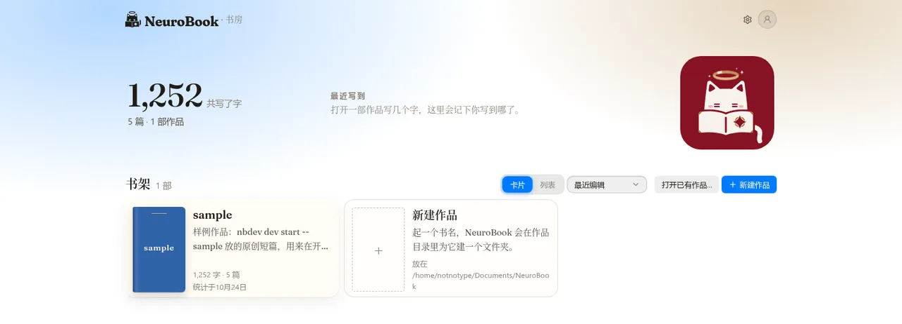

方案 A 书房《一部长篇的一生》：分场脚本（第 1 轮）
这版脚本往下做吗？
推荐照这版出分镜：全页一根红线，做工不重，讲的是作者自己写一本书的路，最贴产品。
| 梗概 | 跟着一本书，从第一行字走到最后一章。每一场是写长篇路上的一站：这一站 NeuroBook 替你做什么，就摆在这一站的书桌上。 |
|---|---|
| 美术 | 白天的书房。象牙纸、墨色正文；赤红只给印章与主按钮，金色只做细线；标题用 Fraunces 与宋体；产品真截图像书里的插页一样摆。 |
| 招牌动作 | 一根红线：从首屏的光标里拉出来，穿起设定卡片，在第 3 章打一个结、一路拉到第 200 章，最后收成夹进那本书的书签丝带。全页只有它一路跟着滚动走。 |
| 星璃 | 只在第 4 场出现一次：对话里那位搭档的头像与口吻。 |
| 小猫 | 在页边，每一场换一种心情：专注、思考、有主意、写作、完成，最后睡着。 |
| 现状与愿景 | 现在能用的写成现在时；第 3 场的伏笔还在做，场内标“在做”；页尾一行列出其余在做的。 |
| 篇幅 | 约 10 屏。 |
分场
第 1 场 · 第一行 · 1 屏
你心里那部长篇，从这一行开始。
本地的长篇写作工作区：AI 替你记账，笔在你手里。
- 得到
- 这是写长篇的地方；它替你记，笔在你手里。
- 画面
- 一张象牙色稿纸占满首屏，正中一行正文正在逐字打出（产品编辑器的字形与光标）；页边书后的小猫专注地看；主按钮“下载桌面版”。
- 动
- 载入时那行字逐字出现；一往下滚，光标拉出一根红线，垂向下一场。
- 依据
- 现在能用本地 Markdown 与编辑器。
第 2 场 · 设定越写越多 · 2 屏 · 钉住
第 12 章断的手臂，第 88 章不会自己长回来。
设定条目记着每个人在每一章的样子；点一个值，看得到它是哪一章定下的。
- 得到
- 人物和设定会随章节变，这里记得每一章的样子。
- 画面
- 桌上散着几张纸卡（人物陈砚、门派青云门、一柄照夜剑），被红线一一穿起、排成一列。陈砚那张卡的“左臂”一栏，随底部的章节刻度推进：第 1 章“健全”，第 12 章“断”，第 74 章“寒铁义肢”。
- 动
- 画面钉住，章节刻度跟着滚动走，卡上的值像翻页一样更替；往回滚就翻回去。
- 依据
- 现在能用世界引擎的条目、按章节的状态、来历。
第 3 场 · 第 3 章挂上一把枪 · 2 屏
第 3 章挂上的枪，第 200 章要响。
伏笔记在账上：埋下、推进、兑现，还欠着哪一笔，一眼看得见。
- 得到
- 埋下的伏笔不会被忘掉。
- 画面
- 一页第 3 章：“墙上挂着一把枪，枪托上刻着半个名字。”红线在“枪”字上打一个结；一叠书页飞快翻过，3、41、120、200；到第 200 章那一页，结松开，金色一闪。
- 动
- 跟手翻页（纸张的 2.5D 翻动），红线随之拉长、绷紧。
- 依据
- 在做剧情插件的伏笔已有内核，作者界面在做；页面上这一场标“在做”。
第 4 场 · 卡住的晚上 · 2 屏
卡住的时候，有人陪你理一理。
讨论时只出主意；要改稿，先交计划，你点头才动。
- 得到
- AI 是搭档：帮你查、陪你理，改稿前先交计划。
- 画面
- 产品的对话视图（真截图，亮色）摆在稿纸上。作者问“第七章那块怀表给了谁？”，星璃（头像）答：“是那枚缺了一角的银怀表哦，在第一卷第七章的雨夜里交给了酒馆老板娘。”作者接着说“帮我把这一章改紧一点”，回复变成一张计划卡，一枚赤红印章盖上去。
- 动
- 气泡随滚动一条条出现；印章落下时，墨色在纸上晕开一下。
- 依据
- 现在能用Agent 对话、讨论与计划模式、星璃作为常驻的搭档（书房里点案头的看板娘就能和她说话）、表情包。
第 5 场 · 稿子是你的 · 1 屏 · 喘口气
稿子是你自己的文件。
一个文件夹，Markdown 写成；拷走就能搬家，换个编辑器也打得开。
- 得到
- 作品不被平台锁住；软件开源。
- 画面
- 大片留白，中间是资源管理器的一角：“青云志 / 正文 / 第一章.md”；红线在这里松松地垂下。
- 动
- 几乎不动。
- 依据
- 现在能用本地文件、AGPL 开源。
第 6 场 · 写完 · 1 到 2 屏
然后，把它写完。
- 得到
- 前面这些，都是为了把书写完。
- 画面
- 红线收拢成一条书签丝带，夹进一本合上的书（赤红封面、金色的星）；书立上书架，落在产品书架的真截图里，“共写了”的字数从 1,252 跑到 312,480。
- 动
- 跟手：书合上；数字滚动。
- 依据
- 现在能用书架与字数统计。

第 7 场 · 开始 · 1 屏
从第一行开始。
0.17 预览版 · Windows · macOS（Apple 芯片）
- 得到
- 现在就能装；它还是预览版，还在做的写在这里。
- 画面
- 书房的桌角，一盏灯，书后的小猫睡着了；鼠标移到下载按钮上，它醒过来。按钮下一行：“还在做的：伏笔账本、谁知道什么、让搭档直接整理设定、写完以后的检查。”再下面是 GitHub、Discord、QQ 群。
- 动
- 只有小猫醒来这一下。
- 依据
- 现在能用Windows 安装版与便携版、macOS 预览版、npm 安装。
长处、风险与素材
| 长处 | 讲的是作者自己写一本书的路，每一站都落在产品上；全页一根线贯穿，做工集中在 SVG 描线与少量翻页，手机上也跑得动。 |
|---|---|
| 风险 | 画面安静，高级感全靠做工：红线的粗细、走法与速度要调很久；高潮落在第 3 场，偏偏是还在做的伏笔。 |
| 素材 | 红线与纸卡（矢量，自己画）、翻页（CSS 3D 或 canvas）、产品真截图（书架、对话、资源管理器）、小猫的心情（现成的 <neurobook-mood> 组件）。 |
首屏第一句用哪一句？
推荐 a1：说给心里有故事的人，也接上整页“从第一行写到最后一章”的走向。
a1
你心里那部长篇，从这一行开始。
a2
写完你心里那部长篇。
落在结果上，和第 6 场“然后，把它写完”撞了。
a3
用工程的方法，写完你的长篇。
README 现在的说法；对没写过长篇的人偏硬。
哪一场要改，怎么改？
已定
- 重写的是文档站首页 blog.notnotype.com/neuro-book/official/（t01 第 1 条）
- 书房与星海书庭分开各试一版，连起来的“从文字到世界”也试一版（2026-11-26）
- 要高级感；整页讲一个故事，用滚动叙事（t01 第 3 条）